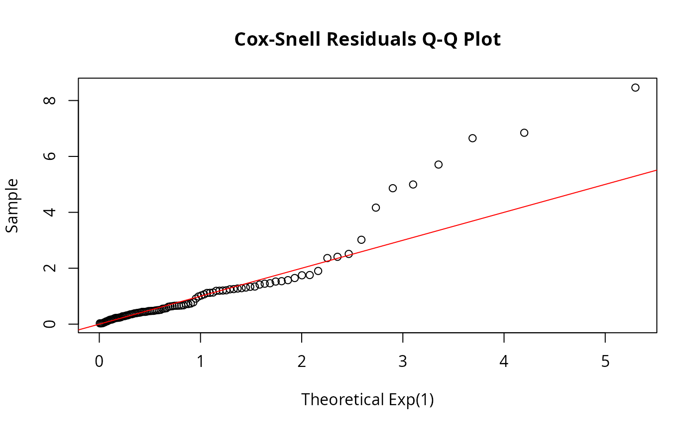

Computes residuals for assessing model fit of a DFR distribution to survival data. Cox-Snell residuals should follow Exp(1) if the model is correct. Martingale residuals identify observations poorly fit by the model.
Arguments
- object
A
dfr_distobject- data
Data frame with survival data (must have time column and optionally delta column for censoring indicator)
- par
Parameter vector. If NULL, uses object's stored parameters.
- type
Type of residual:
- "cox-snell"
H(t_i) - should follow Exp(1) if model correct
- "martingale"
delta_i - H(t_i) - useful for identifying outliers
- ...
Additional arguments passed to cum_haz
Details
Cox-Snell residuals are defined as r_i = H(t_i), the cumulative hazard evaluated at the observation time. If the fitted model is correct, these should follow an Exp(1) distribution (possibly censored).
Martingale residuals are defined as M_i = delta_i - H(t_i), where delta_i is the event indicator. They sum to zero and can identify observations that are poorly fit. Large positive values indicate observations that failed "too early" relative to the model; large negative values indicate observations that survived "too long".
Diagnostic Use
Q-Q plot of Cox-Snell residuals against Exp(1) to check overall fit
Plot Martingale residuals vs. covariates to check functional form
Plot Martingale residuals vs. fitted values to check homogeneity
Examples
# Fit exponential to simulated data
set.seed(42)
df <- data.frame(t = rexp(100, rate = 0.5), delta = 1)
exp_dist <- dfr_exponential(lambda = 0.5)
# Cox-Snell residuals
cs_resid <- residuals(exp_dist, df, type = "cox-snell")
# Should follow Exp(1) - check with Q-Q plot
qqplot(qexp(ppoints(100)), sort(cs_resid),
main = "Cox-Snell Residuals Q-Q Plot",
xlab = "Theoretical Exp(1)", ylab = "Sample")
abline(0, 1, col = "red")

# Martingale residuals
mart_resid <- residuals(exp_dist, df, type = "martingale")
summary(mart_resid) # Should sum to approximately 0
#> Min. 1st Qu. Median Mean 3rd Qu. Max.
#> -7.4623 -0.2766 0.3717 -0.1243 0.6704 0.9712